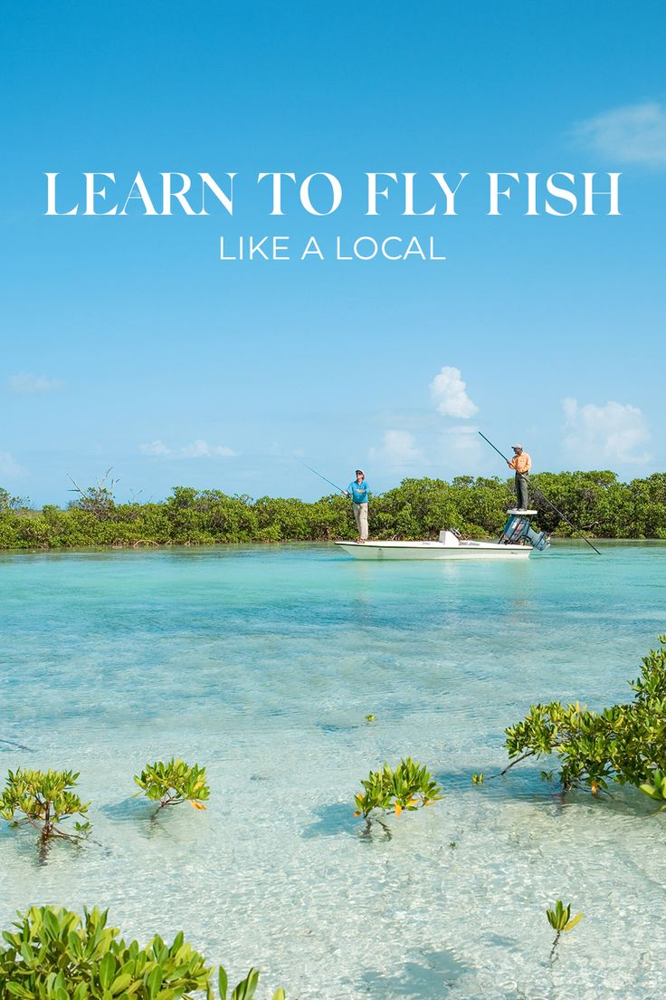
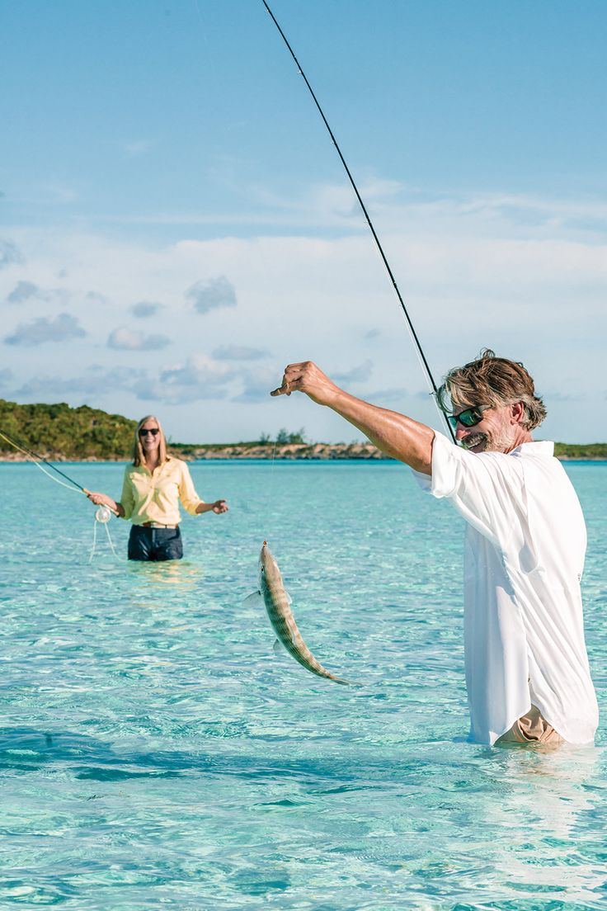
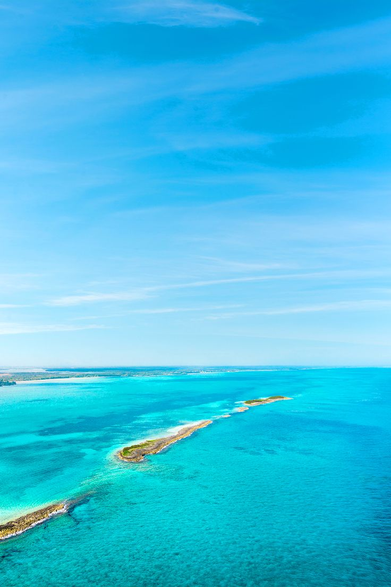
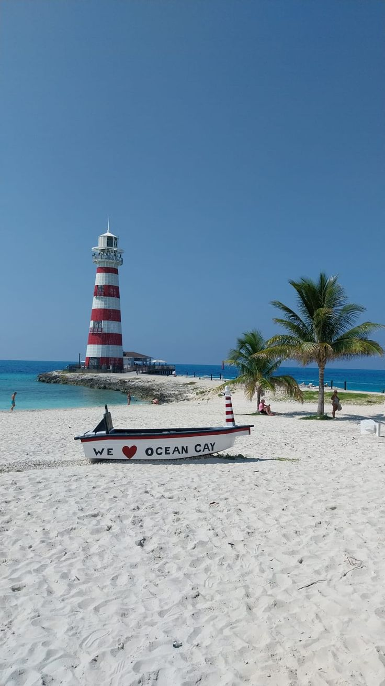
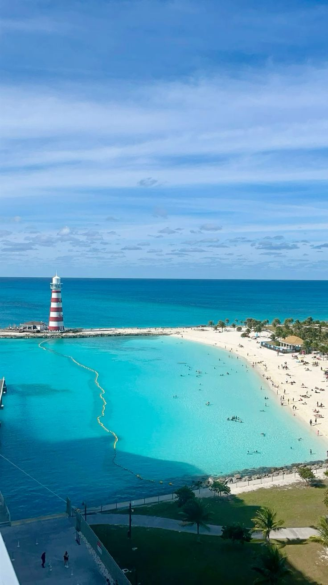

Protected Exuma Cays
Explore spectacular protected islands and coastal landscapes surrounded by the brilliant waters of the Exuma Cays.
Exuma Sport Coast Service is the accommodation service featured on this platform, helping visitors discover comfortable places to stay while exploring the beautiful islands and communities of Exuma, Bahamas. Our accommodation selection covers areas including George Town, Moss Town, Staniel Cay, Michelson/Roker's Point and other destinations throughout Exuma.
Whether you are visiting for a relaxing beach holiday, an island adventure, water activities or a longer stay, Exuma Sport Coast Service provides accommodation options designed to make your Exuma experience convenient and enjoyable. Browse available properties, view their living rooms, bedrooms and bathrooms, and choose the accommodation that best suits your trip.
Protected Marine Reserve & Wildlife Reserve
The Exuma Cays Land & Sea Park is one of the most remarkable protected areas in The Bahamas. Stretching across a large section of the central Exuma Cays, the park protects important marine and terrestrial environments and provides visitors with spectacular natural scenery.
Visitors can discover quiet beaches, rocky cays, clear shallow waters and thriving marine environments. The park is particularly appealing to travelers who want to experience the natural side of Exuma away from heavily developed areas.

Explore spectacular protected islands and coastal landscapes surrounded by the brilliant waters of the Exuma Cays.

The park is surrounded by exceptionally clear Bahamian waters, creating beautiful views both above and below the surface.

Protected marine habitats provide an important environment for fish, coral communities and other wildlife found throughout the Exuma Cays.

Discover peaceful beaches and natural island landscapes where visitors can enjoy the scenery and the quiet atmosphere of the protected area.

A boat trip provides an excellent way to discover the park's scattered islands, beaches and beautiful coastal scenery.
The Land & Sea Park is a protected environment. Visitors should follow park regulations, respect wildlife, avoid damaging natural habitats and leave the area as they found it. Check current park rules before your visit because regulations and access conditions can change.